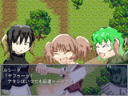
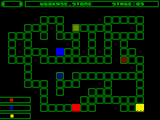
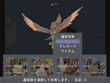
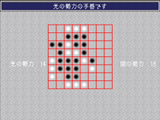
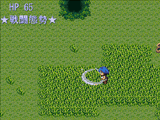
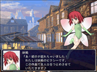
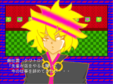
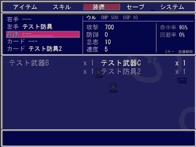
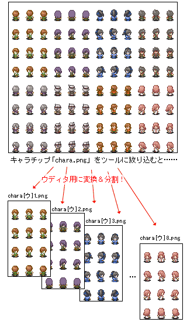
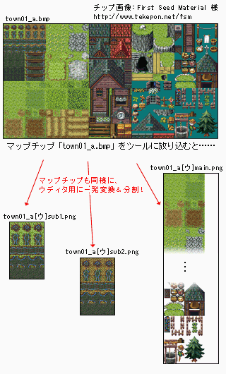

シルバーセカンド開発日誌
■
2008-10-10 (金) ウディコン 眠れる獅子達▼さて不景気な世の中ですが、
この三連休にウディタ作品はいかがですか？
ということで、一ヶ月ぶりのウディタ作品紹介企画！
超今さらですが、有志の方々の手で
非公式ウディタ作品コンテストが開催されていたのでご紹介！
会場は以下のリンクから！
- 非公式ウディタコンテスト Wodicon -(ｱｰｶｲﾌﾞ)
「作品一覧」から各々の作品にアクセスすることができます。
で、第一回はすでに開催済み＆審査済みで順位付けされています。
気になったのだけちょこちょこプレイさせて
いただいたのですが、どれもこれも
普通のRPG（一本道ストーリーRPGという意味で）じゃない
作品ばかりで驚愕！！
かなり個性豊かな作品がそろっているようでした。
フリーゲームの世界では、似たようなものでナンバー1を競うより
オンリー1を競うのが面白い世界だと思っているので、
こういう傾向は嬉しい限り！
なんですが、こんなにたくさんの眠れる獅子が
一体どこに隠れていたのやら！ という驚きもあります。
そういう方々は、たとえウディタがなくても、
いつか何かのツールで作品を作られたとは思うんですが、
ウディタが少しでもきっかけになったのなら嬉しい限りです。
とりあえず「おおっ」と思ったのだけ簡易レビューさせていただきます！
基本的に以下はどれも素材入れ替え/自作などを
しっかり行っていて、割とグラフィックに凝っている作品群でした。
【正当派すばらしい賞】
・DragonTears [作者様サイト/ｱｰｶｲﾌﾞ]
竜人の主人公が繰り広げるレトロ風のRPG、全自作システムです。
非人間キャラ好きーの私には公開前から注目の的だったりしたんですが、
物語も現行レビュー作品の中ではトップクラスのデキかもしれません。
私自身がファミコン世代だからかもしれませんが、
本作品の短いひらがなの文には魂が宿ってるように感じます。
色んな意味でレトロ調がハマってる作品！
「一文を短めに」「漢字を少なめ」に、というのは、簡単でありながら
文章のテンポを上げることができる、とてもいい手段ですよね！
【技術が凄すぎ賞】
・迷宮の町 体験版 [作者様サイト/ｱｰｶｲﾌﾞ]
アクションゲーム。
といってもツクール作品でよくあるアクションじゃなくて
ホンマモンのバリバリなめらかな2Dジャンプアクションゲームです。
無茶しすぎ！
各種パラメータが色々いじれるような汎用性が高いシステムなら、
ぜひ公式でアクションゲーム用基本システムとして
配布させていただきたいくらいのデキ。
【将来が楽しみすぎる賞】
・君が見るこの世界 体験版 [作者様サイト/ｱｰｶｲﾌﾞ]
非人間キャラ大好きの私には大興ふｎ（略）。
魔族っぽい女の子が主人公の俯瞰アクションゲームです。
キャラの移動そのものはウディタの基本機能を利用しているので
割と安心できるスタイルです、コンボが気持ちいいのはベリグー。
ゲーム内の雰囲気も、雲やら鳥の鳴き声やらで
かなり深いところまで作り込まれていて気合いが入ってます。
作者の方の人も絵が上手なお方で、総合力が非常に高くなりそうな逸品！
【その他・ビっと来た作品】
・あたまの中のゆうしゃ様 [作者様サイト/ｱｰｶｲﾌﾞ]
なんとウディタで3Dダンジョンゲー！
いつか来るとは思ってましたが、全体的な雰囲気もよく統一されていて、
3Dダンジョン初作品としてはすばらしい足がかり的な
作品なのではないでしょうか！
・たいぷろ～ぷれ
なんとウディタでタイピングRPG！
タイピングはいつか来るとは思ってましたが、
まさかRPGで来るとは予想外。斬新なだけでなく、
なかなかよくRPGと同化できていると思います。
・幽閉された王子と門番の島 体験版
表裏の世界を行き来できるRPG、物語はまだ入ってないのに、
独特な雰囲気だけでゴハン三杯行けそうな作品。
・蛍の宿花
脱出型パズルアドベンチャーっぽいRPGです。
死ぬ理由は君の判断ミスのみ！
「謎解き要素だけでもRPGは作れるんじゃー！」
という主張を感じさせる、非常にいい見本になりそうな作品です。
という感じでした！
すばらしい作品群、本当にありがとうございます！ 最近はWOLF RPGエディターの修正を行っております。
Hetさんという方から生成アルゴリズムを丸ごと頂いてしまったので
それでマップ自動生成機能を実装してみたのですが、
これは使えそうな予感です！
ダンジョンのマップ考えるの面倒臭いよドラ○も～ん！
ってときに非常に使えそうな予感がします、私はRPG作りませんけど！
RPGエディターの文字が泣いてます。
とりあえず前回のレビューから40日ほどしか経っておりませんが、
それまでに来たウディタ作品を
ちょこちょこレビューさせていただきたいと思います。
今回は斬新でありながら完成度の高い2作品＋講座をレビュー！
まずは講座から！
【ウディタ講座】(インターネットアーカイブ)
すうさんによるウディタ講座です。ダウンロードしたての人向けに、
手順の一挙一動を細かく記載した基本的な使い方が載っています。
【サルディタ――ウディタ講座】(インターネットアーカイブ)
下でもレビューさせていただいた
藤田るいふさんによるウディタ講座です。
こちらはウディタの要素単体の説明や使い方が記載されており、
ちょこっと触った人が、より詳しく知る目的で
読むのに適していると思います。
以下、作品レビューです。
ザ★ジンギスカン[Vector/新ｳｨﾝﾄﾞｳ] 作者：藤田るいふさん

現レビュー作品の中で、現代RPG観に照らし合わせる限りでは
ゲーム的に一般的と思われるRPGです！
羊2頭がジンギスカンを作るために駆け回る物語です。
プレイ時間は効率よく回って約40分ほど、システムは基本システムを
独自に改造したものとなっています。
と、それだけ聞くとただの短編RPGですが、始まった瞬間から
何か矛盾を抱えた面白げな設定と、キャラを立たせるために
こだわり抜かれたグラフィックのインパクトには
目を見張るものがあります。
最も特徴的なのは、戦闘シーンでも会話シーンでも
バリバリ動く左右の彼女ら！
武装を変えれば、ちゃんとその武器や防具を使う演出に
変わるといったこだわりようは驚きです。
というかフィールドでもずっと出っぱなしです、これは斬新すぎる。
しかし、斬新性を備えながらそれ以外の部分が全くおろそかに
されていないのは非常に好感が持てます。
戦闘はちょっと頑張る必要があるくらいの難易度で、
いわゆる村人キャラからの情報収集も
重要になってくるという、実にRPGらしい部分も！
ですが、無駄な情報はほぼゼロですし、村人系キャラも
全員顔付きで魅力的なキャラばかりなので、元より
一通り話さなければ気が済まないってモンです。
こういうところもかなり気合いが入っています。
謎解き要素を含むボス戦は、初見で死ぬ率がやや高めですが、
直前にセーブポイント完備ですし、
全滅した場合にはヒントを見られるように
なっているので、ハマりを起こすこともなく安心！
面倒くさくなるとすぐ投げてしまうような
そんなヌルゲーマーの私には非常に助かります。
ただ最序盤の戦闘が少々キツめなので、
落ちてるアイテムの収集はお忘れなく。
とりあえず、棒っきれとか限界いっぱいの肉骨粉がないと
始まらないゲームです。
プレイ時間に対する内容の密度はかなり濃く、
ゲーム的な説明やヒントも適切に配置されているので
最後まで楽しく遊ばせるのに十分な勢いを持った
完成度の高いゲームだと感じました！
アクセルハッピィィィーー！！
うごかせストーン［Vector/新ｳｨﾝﾄﾞｳ］ 作者：145 さん

ウディタの機能を活かして作られたパズルゲーム。
10ステージ＋それらをクリアすると出てくるExステージの
全11ステージから構成されており、
Exステージをクリアするとエンディングとなります。
ルールですが、ステージ上に存在するストーンは上下左右の
いずれかのキーを押すと、
押した方向に向かって壁に当たるまで直進します。
その操作を繰り返して、全てのストーンを
ゴール地点に載せるとクリアとなります。
シンプルですが、ストーンが複数になった場合、
その全てが一斉に同方向に移動してしまうので、
そこまで行くと頭の使い所が重要になってきます。
発想力勝負な作品ですが、それだけにとどまらず、
全体的にサイバーな自作グラフィックと
BGM素材でまとめられていて雰囲気がよく統一されており、
非常にセンスを感じさせます。
こういうフレーバー部分も、遊びたくなる気をそそられる
重要な部分だと思います！
という感じで、ウディタ作品も続々と出始めているので、
今後の動向に注目しています！
あと、これは個人的な嗜好の話になっちゃうんですが
RPGの戦闘回数は『シルフェイド幻想譚』並みだと
遊ぶ側としてはラク……かな……！！
とか思っちゃうところもあります！
バトルゲームを否定するわけではないんですが
1時間で50回とか60回もバトルが発生したりすると
時間単位のコストパフォーマンスが
ちょっともったいない感じがして！
シル幻ではダンジョン内だと120マス歩かないと敵が出ないとか、
フィールドだと森以外では敵が一切出ないとか、
どんだけ面倒臭がりが作ったゲームなのか知れようってモンです。
1時間あたり20～30回くらいの交戦回数なら
自分もかなり気軽に遊べると思います！
でも、RPGにおける「戦闘」の立ち位置ってホントどうなんでしょう。
もともとRPGそこまで好きってわけじゃなくて、
そんな人でも遊べそうな見本として
『シルフェイド幻想譚』なるRPGを開発したのですが、
未だに戦闘の在り方をどうすべきなのかモヤっとしてます。
たまに「戦闘＝プレイ時間稼ぎに便利な一品！」に
なっているように見えちゃうものも実際あったりするので、
当然ながらあんまりいっぱい入れるのは考え物です。
個人的には「戦闘＝ゲームにおけるスパイス」くらいが好きかな！
と思っているところがあります。
スパイス山盛りの料理は辛くて全部食べられませんが、
無いのは寂しいものです！
仮にストーリーだけのゲームにして、
魔王と戦ったー勝ったー（※戦闘なしイベントのみ）
だと、ちょっとカタルシス的に物足りないかもしれません。
自分の育てたキャラで強敵に勝ったときの嬉しさは、
小説で主人公が悪を打ち倒したときよりも
比べ物にならないほど大きいと思います。
これからの時代、RPGを戦闘メインにするなら、
ポケモンのように「戦い＝仲間増やしの手段」にするなど、
戦闘自体に大きな意味を持たせる必要がありそうな気がしています。
ポケモンの戦闘はあくまで仲間を増やすことに主軸を置いているので、
エンカウント戦は基本的に入っても
入らなくてもいい「草むら」でしか発生しませんし、
また進路妨害する者は、そのほとんどが
明確なイベント戦（トレーナー戦）のみに
してあるのがよく考えられているなあ、と思います。
イベント戦は一度こなすともう起きませんから、
道を塞ぐ敵は一度倒せばそれでOK！
通常のエンカウントバトル方式だと、
いつまで経っても進路妨害的な戦闘が
繰り返されるのでイヤになりますが、
一回だけなら重い戦闘も戦おうって気が起きるというものです！
何より、勝てば先に進むために
必要な戦闘回数が実際に減少していくわけですから、
ゲームそのものが間違いなく進んでいることを実感できるのがいい！
次に進んで捕獲可能な新しい敵が出るのも嬉しい！
という感じで、子供に遊ばれている名作は名作らしく、
そういった部分がよく練られてる印象があります。
できるなら自作品にも、一時的にでも自発的に
「戦闘したーい！」と思わせる何かを持たせたいですね！
以下は気になったコメントなど。 ▼追記を開く▼＞三国志は～（略）
三国志に関する文章のコメントが10件以上来ました！
三国志好きな人多いなあ！
色々な豆知識やトリビア情報まで
送ってくださってありがとうございます。
三国志は三国志演義というのが別にあって史実と話が違うんですよとか
（今私が読んでる横山氏の漫画も演義準拠だそうです）
聞いたので、これはひょっとして蜀（劉備さんの国）生存フラグ！？
と思ったのですがそうでもなさそうでした、残念……！
＞宿題がなかなか終わりません。
＞楽に終わらせる方法ってないでしょうか？
「ドラ○も～ん宿題が終わらないよー！」
「地球はかい爆弾ー！（ピカピカーン）」
（※これはフィクションです、某有名漫画とは何の関係もありません）■
2008-07-18 (金) ウディタ作品レビュー▼そういえばそろそろ1300万ヒットです、
いつも来てくださる方、本当にありがとうございます！
親の手術が無事終わったので、今のところ一安心しています。
でもお見舞いだとか細かな用事だとか何だとかで色々あるので、
現在の開発はときどき進めている感じになっています。
ということでネタはないので、今回はウディタ振興企画レビュー！
ウディタそのものはあんまり流行っても困るのですが
作られたものはせっかくなので色んな人に知って欲しい！
そんなわけで、今後たまーに、「おっ」と思ったウディタ作品を
ここで紹介させていただこうと思います！
ただ全部を全部プレイできているたわけではないので、
「こんなに凄いモノ作ったのに何で載ってないんだ！」
と思われた方にはごめんなさい！ あくまで私の手の届いた範囲で！
私はもっぱらウディタ公式の
「今こんなもの作ってますスレ」をチェックしてます。
紹介するのは、一応完成している作品のみです。
将来10作品もでればいいかなと思いましたが、
意外と出てきたので嬉しい！
ゲーム名に[新]とあるのは新ウィンドウを開くリンクで、
[アプ]とあるものはウディタアップローダへの同ウィンドウリンクです、
リンク先にある小さい「ダウンロード」をクリックすると
ダウンロードできます。
作者名のリンクは、全て新ウィンドウでその人のサイトが表示されます。
ダンジョンシーカー[新] 作者：すう さん

いきなり身内ですが、マップやキャラ画像が
フルオリジナルグラフィックという時点で
ぜひとも紹介しなければならないと感じます！
基本システムを流用した作品で、第二のサンプルゲーム的な
位置づけの作品です（と本人が言ってました）。
内容は、8人のキャラの中から最大4人を選んで自由にパーティを組み、
ただひたすらダンジョンの最深部を目指して
ときどき相談したり全滅したりしながら進む
バトル＆ダンジョンゲームです。
システム自体は私が作ったものなので、
戦闘の快適性はそれなりのつもりです。
ボタン押しっぱなしで全員攻撃コマンドを
ピピっと選べるので、戦闘が多くても安心！
すうさんのキャラクターと、
かわいい敵キャラ画像（これはよその素材らしい）と
必要十分なキャラ性のおかげで、
飽きっぽい私でもクリアまで3時間しっかり遊べました！
Light＆Black[削除されました] 作者：U-1 さん

これはウディタの可能性を感じられる一作です。
世界観としては、白と黒の勢力が云々（略）。
つまるところ要はリバーシ（オセロ）ゲーム！
それ以上に説明が必要でしょうか！
私もＣでオセロプログラムを組んだことがありますが、
それをわざわざウディタでやってしまったところが凄い。
コンピュータ対戦もしっかり実装されていて、
完成度は非常に高いと思います。
タイトル画面で、ちゃんとマウス操作であることを
分からせるような工夫がされていたり、
オープニング・エンディングをスキップできるといった小さな配慮など、
こういった部分にゲームを作り慣れている感を感じます。
こういう小さな部分は、一見とても何気ないことなんですが、
優れたおもてなしの精神がないとサッとできない、
意外と難しいことです。
いつも快適さを追求する自分としては「やるなあ」と言いたくなります。
1プレイはリバーシの1対戦分なので、サクッと終わりますよ。
ある旅人の手記[削除されました] 作者：えーき さん

これもウディタの可能性を感じられる一作、
見下ろし型アクションゲームです。
とにかく敵を切る！主人公の操作に関わる
特殊なスキルを装備して使いこなす！
シンプルといえばシンプルかもしれませんが、
ツボをしっかりおさえていて好印象でした！
こういったゲームを作ろうと思っている方には、
一つの見本となると思います。
素材はFirstSeedMaterial様(インターネットアーカイブ)さんの
ものなので、見栄えもとてもいい感じです！
街の人を抹殺しちゃったり超強いモンスターと戦ったりと色々できます。
これで、次は8方向キャラグラを駆使してダッシュやら
ジャンプやらがしっかりできるアクションゲームが出てきたら、
いよいよウディタの本領発揮ィィィ！という感じだと思っています。
ウディタは半マス移動が可能なので、初期イースシリーズの
マネくらいだったらできるかもしれませんね。
ファンタジアクロス[削除されました] 作者：茶 さん

いかにもファンタジーっぽい短編アドベンチャーRPGです。
主人公である妖精さんが、花畑を荒らす何者かを
捕まえるために奮闘する物語、
ウディタで素状態から作るなら、まずこんなのになるかなあ、
と思える非常に素直な作品。素材に
FirstSeedMaterialのものを使っていたり、
立ち絵がオリジナルなのがポイント高いですね！見栄えがいい！
今後は本編であるＦａｎｔａｓｉａ Xの開発を予定されているそうで、
さらにエンジンかかってきたらどう面白くなるんだろう！
と少し期待しています。
ジャムジャムマーマレード[削除されました] 作者：アレン さん

同じく短編アドベンチャーRPGなんですが、
ファンタジアクロスとはあまりに正反対、
そのセンスに色んな意味でコーヒー吹いた作品です。
色んな意味で芸術的というか前衛的というか、
ギャグにミュージカルに色彩と
作者さんの個性が大爆発しています。
こちらも顔グラフィックはオリジナル！
「上で紹介されたゲームはよりもっと濃いのが欲しい！」
と思った方にはよく合いそうです。
紹介は以上です！
完成作には、サンプルアレンジなりFSM素材を採用されたりして
グラフィックに凝った作品が意外と多かったので、
グラフィックから入るのも完成へのモチベーションに
繋がるかもしれませんね！
以下はシル学に頂いたコメント返信です！ ▼追記を開く▼
以下は一つ前の記事、シル学の「クラス」についていただいたご意見です。
＞考古学クラスに入る気マンマンです先生ぇ！！
もう入学願書（というかクラス願書？）書いて待ってる人が！！
楽しい3年間を演出すべく頑張ります！
＞小・中・高・大一貫の学院、つ…つまり、
＞小○生に手を出すことが可能と！？ イヤッフー！
＞僕はショタなので、男主人公でセシルくんと好き好きしたいです。
どうしてこうなるまで放っておかれたんですか！ しかもお二人も！！
コストに見合えばセシル君の顔グラも入れておく予定なので
頑張ってシナリオ作ってください。
＞唐突ですが、コミケでスモウル作品本作ってもいいですか？
ぜひ！！作ったらデータだけでも送ってください！！という気分です。
本編はCERO的な意味で割と健全な方向に走りたいので、
皆さんの二次創作はもっと色んな意味で
ハジけて欲しいなあと思うこともあります。
ただひたすらエロスを極めただけの物でも、
エシュターとアルバートが（自主規制）な展開になってるブツでも
覚悟はできていますよ！！！ むしろ大歓迎！！
シル二次にはもっとヨゴレが欲しい、うん。■
2008-06-21 (土) WOLF RPGエディターの歴史▼WOLF RPGｴﾃﾞｨﾀｰを作っておきながら
それでRPG以外のものしか作ろうとしないウルフです。
身内が突然の容態悪化で手術だ何だとかあって、
ついでに低気圧接近中で気分が落ち込み気味です。
これからしばらく、色々と忙しいことになりそうなので
しばらく更新が途絶えるかもしれません。
ひとまず、開発日誌はちょっとだけ休息させていただきます。
たぶん二週間もすれば帰ってきます！
|
|
特にネタもないのでウディタ話。歴史と過去を振り返り。
WOLF RPGエディター、Ver1.02になってから約10日で
2500件のダウンロードがありました（フル版1950、プログラムのみ550）。
まさかこんなにダウンロードしてくださる人が
いらっしゃるとは思いませんでした！
「最終的に200人くらいの人がアクティブ層になるのかなあ、
サポートめんどいしもう打ち切りにしちゃおうか」
などと一時期思っていましたが、
やめないでデフォシステム搭載してみたり
バグ直したり新機能入れたりし続けてみたら、
窓の杜さんに紹介されたり
作品もぼつぼつ出始めてくるわで、
たとえ半ばイヤイヤやりながらでも、
継続することは力になるんだなあ、
と思い知らされます。ありがとうございます！
ダウンロードした人の内の99％の人が完成しないと仮定しても、
将来的に20作品くらいは期待していいかもしれません。
ツクールの作品公開率って何％くらいなんだろうなあ。
開発当初はRPGツクールVX発売が明かされていなかったがゆえに、
「このままじゃツクールも終わりかなあ、
でもお手軽2DRPGツクールはこれからもきっと必要だよな！
よっしゃ一肌脱ぐか！」
と偉そうなことを思って一般公開向けに開発をシフトしていたのですが、
VX発売でその目標が消失しちゃったので、
ウディタは微妙に迷走中です。
自分用ツールが欲しかったので別にいいといえばいいんですが、
ただお手軽表現ツールとしてのツクールが存続するなら、
こちらはこちらであんまり頑張ってもなあ、という感じでしたし、
エンターブレインさんの商売の邪魔して
白い目で見られるかもしれないしで、
何だか色々タイミングが悪かった気がしています。
それでもウディタがここまで良くなったのは皆さまのおかげです！
自分用としてもだいぶ使いやすくなったし、人のためと思わなければ
絶対追加しなかったような機能もいっぱいあるので、
多くの意見を下さった皆さんには本当に感謝しています。
ちなみに、シルエットノートではRPGツクールXPで
RGSSバリバリ使ってそれなりのものを作っていたので、
「ウディタにスクリプト機能は入れないんですか！？」
と聞かれることがあったんですが、
RGSSはイベントコマンドとの連携が取りにくかったり、
RGSS中でイベントコマンド実行したくても
「フンガー分かりづらいよぉぉ！」ってなったりしてて、
個人的には苦労の方が多く感じてしまいました。
自分は中途半端なRGSS習得者だったので、RGSS内だけで
完結するプログラムを綺麗に作る術を持たなかったというのが、
しんどいなあと感じた最大の要因ではないかと思います。
（しかも当時はC++を身につけてなかったので、
クラスの概念すらよく分かってなかった）
でも、ちょっとプログラムかじった人がこの程度ってことになると、
まともにRGSS使いこなせる人って何人いるのかなあ？ という疑問も。
下手するとウディタなんかより段違いにマニア向けです。
初心者、熟練者の両方の需要を満たしているといえばそうですが、
その両者の間がないような気がします。
RPGツクールXP、VXで凝ったものを作りたい～という方には、
とにかくプログラミング能力が必要ですが、
プログラミング能力があるならRPGツクールXP、VXの方が
作りやすいんじゃないかなあ、と思っています。
でもそこまでいったん突き詰めた結果、私みたいな凡人には
イベントコマンド型がいいやーと思いました。
初心者と熟練者の間の人には、ウディタをおすすめします。
RPGツクールは今後もRGSS方針貫くんでしょうか、
ついでにVX何本売れたんだろ、など色々気になることはいっぱいです。
誰か知ってたら教えてください！■
2008-05-31 (土) ウディタLvアップ！(予定)▼
すうさんから、MIDI機能充実なDLLの情報を教えてもらったおかげで、
MIDI音源のループの仕様や再生の安定性が、
RPGツクールXP用まで向上できそうなことが判明しました。
探せば便利なのも転がってるもんですね！
でも、そこにあるのに気付けない。
まるで都会から見た夜星のようです。
かーぜーのなーかーのすーばるー。おっとこれは地上の星。
何はともあれ、MIDI機能に関してはツクール並みになりそうなので
「ウディタのMIDI再生がヘボすぎるよーうわーん」
という人もこれで安心！
次回バージョナップをご期待下さいッ！！！！！！
ついでに、MIDI、OGGともに、再生中に音量を変更したり
テンポ/周波数を変更したりできるようにするつもりですので、
音声関連はかなりレベルアップできると思います。
最初からバッチリ行かないのは、もともとド素人同然の自分が
知識の習得と並行しつつ開発してるせいなのですが、
企業製品のように最初から完璧なものを作らなくてもいいのは
アマチュア世界の利点でもあるよなあ、と思ってます。
おかげでフットワークが軽い軽い。
ただインターフェースを自分好み仕様で作ってしまったので
その辺りが一般向けになってないことだけが残念。
モノリスフィアでバリバリ高評価が出せるくらい
マウス操作がうまい人は困らないんでしょうけれど。
それはそうと、育成シミュレーション系ゲームの事前研究を
前々から進めていたのですが、どんどん何が何だか
分からなくなってきました。
例えばときめきメモリアルGirl's Side 2nd Kiss（※公式見ただけ）。
主人公が女の子なのですが、システムが壮絶でした。
「事故チュー（誤字にあらず）」システムというのが搭載されていて、
物語の冒頭部分にて、事故で男子キャラと
チューしてしまうというシステムです。
で、もちろんその後の展開に影響が出てくるわけなんですが！
これ最初見たとき、エイプリルフールか何かかと思いました。
事故でチューなんかしないよ！ 何考えてんだよ！
シル学で女主人公編も作りたいなあ、と思いながら構想中の身としては
非常にフクザツな心境です、乙女の気持ちが分かりません。
こんなこと言ったらときメモGSファンの人に殴られそうですけれど。
何はともあれ、シル学は熱血友情ゲーにしよう、うん。
そう決心した一日でした。
以下は有志の方々によるシルフェイド幻想譚パッチなどのお話。 ▼追記を開く▼の前に、そのパッチ入れて久々にシル幻をプレイしたら、
自画自賛的ですがセリフにムダがなさすぎて笑いました。
これホントに自分が書いたのか疑問になります。
1文1文、1イベント1イベントごとに時間かけたもんなあ。
あと文字サイズの都合上、1文あたりの文字数が少ないので
読みやすく、テンポがよかったというのもあると思います。
当時は色んなことを無意識にやってましたが、
今になって見直すと参考になるところも多いですね。
新シルフェイド見聞録やシル学院も、いいところは維持して、
新しいところはより新鮮に作りたいものです。
＞シルフェイド総合版(サービス終了)にて、
＞シルフェイド幻想譚のハードモードを
＞さらに難しくしたパッチを作成させていただきました
すげえ！かしこまりました、ありがとうございます！
にしても、こういう試みは面白いですね、
もちろん自由に配布してくださって結構です。
ただし、宣伝・配布については自己責任でお願いします。
難易度がかなりキチキチにチューンされているパッチです、
ハードでもぬるーいという方にオススメ？
→ 2025/11/05: 掲示板がサービス終了で消えてしまっていたので
こちらにもパッチをバックアップさせていただきました。
作者様がまた別の公開場所をご用意してくださったら
うちからは消しますので！
『シルフェイド幻想譚ベリーハードモードパッチ』
●ベリーハードパッチのダウンロード(481KB)
シルフェイド幻想譚のDL版ファイルに上書きして使用します。
システムなども当時のバージョンに書き換わるのでその点はご注意を。
＞（前回の記事をうけて）先輩いなくなっちゃうんですか！？
＞空気がなくなったら死んじゃう！
某先輩は先輩じゃなくなりますが、
別の形で出すと思いますのでご安心下さい。
そう、例えば空気みたいな存在として。
＞ウルフさんのお勧めのSF小説は何ですか？
最近記憶にある中では、「エンダーのゲーム」という小説が
面白かったです。約540ページ。
現代に読むとあんまり超科学してない内容なのですが、
1987年発行ということを考えるとすごく先見の明があると思います。
（例えば、劇中に匿名フォーラムで自作自演するネタがあったり！
ネットもまともにない時代なのに早いよ！）
主人公君の、天才ながらも時に容赦のない優しい性格が大好きです。
でもそんな自分の目指すところは、
「天才ではなくても努力家である」こと。
今のご時世、汚いことや悲しいことも多いですけれど、
真っ向から頑張り続けることで割とうまく行くんだよということを、
多くの人が思い出してくれたら嬉しいなと思っています。
叶わないきれい事だとおっしゃるかもしれませんが、
清く正しく頑張って成功する人が少しでも増えることで、
真面目に生きてる人は、もっと勇気を持てるようになるはずです。
自分は、誰かの目標になれるくらいの存在になりたいと、そう願います。
いざ目指すと大変なんでしょうけれどね。 ■
2008-03-26 (水) ウディタのレビュー来ました▼システムを自由に拡張できる
フリーのRPG作成ソフト「WOLF RPGエディター」
http://www.forest.impress.co.jp/article/2008/03/25/wolfrpgeditor.html
（窓の杜/インターネットアーカイブへ）
窓の杜さんが何の前触れもなくWOLF RPGエディターを
紹介してくださってて、目玉がぶっ飛びました。
あと六花さんのtkool2WOLFも同時紹介。
こんな便利ツールを作ってくださってありがたやありがたや。
記事の内容は、ウディタがどんなものか知らない方には
ちょうどいい内容になっていると思います。
特に嘘もないですし、誉めすぎというところもない辺りが
プロの記事ですね！
ただ「改造して独自のメニューを追加したり、完全にオリジナルの
システムを1から作成することも可能だ」と書いてありますが、
ユーザーさんの能力にもよりますけれど「可能」というのは
「簡単」という意味ではありませんのでご注意を！
でも、最近の若い子は早い内からPC関連技術やらプログラムを
習ってたりするそうですので、これからは、複雑な処理が要求されても
結構あっさり作っちゃえる人が増えるのかもしれませんね。
そもそも全員がプログラムでゲーム作れるようになったら
ウディタ要らないなあ。
あと、ウディタコンテストを開催しようかなーと思って
参考に3分ゲーコンテストのサイトを見に行ったら、
どんどんハードルの高さにやる気がなくなってきたので、
とりあえず代替策としてウディタ公式ページに
WOLF RPGエディター作品登録ページを作っておきました。
スクリーンショット貼り付け可能で、
コメントを受け付けられる登録ページです。
コンテストは何というかもう……いいや。
作業量的には問題ないと思ったのですが、精神的にとても大変そうです。
コンテストの代わりといっては何ですが、
WOLF RPGエディター公式の作品登録ページに、
「これは光ってる！」という感じの作品が登録されていた場合は、
レビューを執筆させていただきたいなあと
考えておりますので、それでご勘弁を。
コンテストでもレビューでも、
形はどうあれ良い作品は紹介したいと思いますし、
それをたくさんの人に知ってもらいたいと思う気持ちも変わりません。
※3分ゲーコンテスト(インターネットアーカイブへ)って？
ツクール新聞(インターネットアーカイブへ)を執筆なさっていた
トモタカさんという方が主催しておられたゲームコンテスト。
その名の通り3分っぽいゲームを評価するコンテストです。
ですが色々問題が発生してしまったようで、現在休業中です。 ■
2008-03-15 (土) ウディタ正式版公開！▼
WOLF RPGエディター正式版、ついに公開しました！
更新情報は公式サイトの方に掲載しておりますので
こちらをご参照下さい。
WOLF RPGエディター公式サイト
http://www.silversecond.com/WolfRPGEditor/
今後の更新情報などは全てこちらに載せていく予定です。
ウディラー（今考えたけど語感がおかしすぎる）の人は
見逃すなっ！です。
今回の更新で何が一番いいって、
暗号化がとうとう実装されたことです！
フォルダ単位の暗号化、またはまるまる全部暗号化が可能で、
ツクー●みたいに音楽だけ圧縮できないとか、
そんなこともありません！
（というかツクー●がなぜ音声だけ圧縮できないのか謎です。
権利やら何やらの、技術以外の問題がありそうな気がします）
また今回の実装内容には、RPGツクールV×のWikiから
発想を借用させていただいたものがあります。「接触範囲拡張」です。
というか、接触範囲拡張を思いついた人スゲェ！地味に便利です！
次期ツクールがあるなら是非入れていただきたいと思います。
この「接触範囲拡張」は、イベントが起動する範囲を
本来の1マス×1マスより広くすることで、
たくさんイベントを並べないと実現できない処理を
一個のイベントで実現できるという優れものです。
ランダムエンカウントや、街の入口などに利用しています。
それと、デフォルトシステム搭載も今回の更新の目玉です！
なんだかちょっとバグ込みの予感なので、その点だけ留意してください。
何か見つかったらコモンイベント配布で修正しようと思っています。
また、ウディタをダウンロードするのが面倒臭い人用に、
ムービーを撮影して現在アップロード中です。
いやー、動くものがすぐ見られるって便利ですねYoutube！ニコニコ！先週からずっとウディタのバグと格闘しています。
開発者本人はマップ機能なんて全然使わないのに
マップ周りでいっぱいバグが出てウキャー！！
でもVer1.00で大々的に正式っぷりをアピールしたいので
がんばって直しています。

開発中のデフォルトシステム、装備画面です。
デフォルトシステムでは、設定によっては
防具欄の3番目と4番目に同じ装備を付けられたり、
武器を防具欄にも装備させることができます。
全身にロングソードを装備して
5回攻撃なんていうおバカなこともできますし
アクセサリ欄を2つ作って色々組み合わせたりもできます。
このデフォルトシステム同梱版は、
ウディタの基本的な使い方さえ分かれば
データベースの設定とコモンイベント呼び出しだけで
基本的なRPGを作ることができる予定です。
少なくとも、自作システムを作ろうとして挫折した人には
十分扱えるレベルにするつもりですので、ご期待下さい。
そのうちウディタのコンテストみたいなのも
やりたいなあ、と思ってますが、作品が来なくて「……」となる可能性が
極めて高いので微妙な状況です。
3分ゲーコンテストやコンパクみたいに使用ツールが何でもOKなら、
それなりに集まるんでしょうけれど……。
ついでに言うと、コンテストを開くにあたっては
審査方法が難しいところです。
審査員だけが評価を付けるのか、一般投票も有りなのか。
なんだかんだ言ってどちらも揉めますから、
可能な限り公平に評価できるシステムが欲しいと思っています。
一般投票をすると既存のファンが多い方が強すぎますし、
審査員だけの評価だと割と好みだけでケリが付いてしまいますし。
シナリオのように、主観的な評価で左右される部分は多人数の平均で、
独創性やインターフェース・ゲームシステムなどの、
比較的客観的な評価が要求される部分は
信頼できる少数で評価すればいいのかなあ、うーん。
研究でも思いますが、数値で表されないモノの価値を
数値として客観的に評価するのは、とても難しいことです。
特に、評価するモノが人間の感性に影響するものなら、なおさらです。
時には、評価する手法そのものが
一つの研究として成り立つことほどです。
ゲームに点を付けるということは、凄く難しい。 ■
2008-02-21 (木) 時間が消し飛ぶー▼
WOLF RPGエディターなのでウルファールでいいやという安直な名前。
WOLF RPGエディターのマスコットキャラクター考えなきゃなあ、
なんてどうでもいいこと考えて落書きしてました。
どう考えても大衆向けじゃないツールに華は必要なのか！？
いや断じて否！もっと男気あふれるブツでありたい！
で、それはともかく、現在、WOLF RPGエディター改造中です。
ついでに「開発に慣れてない人向け計画」を進めるために
デフォルトシステムを作成しています！が、早くも苦戦気味です！
自作システム開発にはかなり慣れてるつもりなんですけれど、
それでもこれだけ苦労するということは、
普通の人にはWOLF RPGエディターなんて
意味不明間違いなしだと思いました。
今使ってくださっている方々には感謝の限りです！
（というか使ってくださっている人が
いるのかどうかわからｎゲフンゲフン！）
ちなみにこのデフォルトシステムは、RPGツクール2000より
高度なシステムが組めると豪語できるシロモノにする予定です。
で、そうやって色々作ってるとその度にバグがけっこう出るので
デバッグ作業もわりかしバッチリです。
シル見リメイクのためにも、少しでも作業効率アップができるツールに
仕上げていきたいと思っています。
なお、デフォルト戦闘システムの仕様はかなりマニアックです。
ベース部分はデフォのままでも、
ユーザさんのデータベース設定によっては
そう簡単には底が見えないゲームシステムにできる、というのが目標！
全部コモンイベントでできてるので、分かる人なら改造もできます。
▼追記を開く▼以下は拍手の中の気になったコメントやらご質問コメントです。
>SmokingWOLFさんほどの人ならもう見聞録の
>ネタやストーリーも考えてるのでしょうか(ノ∀`)
おかげさまで最終話だけはシナリオ・演出共に
バッチリなほど思いついてます。ただ途中の話が思いつきません。
ついでに、細かいネタをシルノで使い切ったのでストックがありません！
話の概要なんてどうでもいいから面白い小話を！ハァハァ！
>モノリスフィアにリス君の出番があると知って安心しました。
ありません！！
>SmokingWOLFさんは腐のつく属性の方なのでしょうか。
サニーガールというフリゲ紹介サイトではシル見が
なぜかBLの項目にも入ってたとか恐ろしくて言えなかった
私ですので、腐ではありませんと主張します。
誤解を解くために、以後の幻想譚やシルノでは
ちゃんとウフフな話も織り交ぜるようにしていますから！■
2008-02-03 (日) ツール紹介「tkool2WOLF」▼いよいよモノリスフィア投稿直前という状況ですが、
先日、ウディタ用ツールを作ったよーというスゲェ
嬉しいご報告があったのでここで紹介させていただきます。
「WOLF RPGエディターって素材ないし
素材の改変も面倒だし使う気起きな～い」
という方向けに待望のツール！その名も「tkool2WOLF」！
これはRPGツクール2000/2003用のキャラチップ・マップチップ素材を
WOLF RPGエディター用に一発変換してくれるという超便利なツールです。
[ツールの公開先]
http://sunsoften.web.fc2.com/(インターネットアーカイブ)
[tkool2WOLF+/六花 様]
このツールの機能を図解すると、それぞれ以下のようになります。
【キャラチップの場合】
ツールを起動してキャラチップをドラッグ＆ドロップすると、
以下のような分割方式で画像の切り分けを行ってくれます。
これでツクール2000用キャラ素材もすぐウディタで使えるように！

【マップチップの場合】
普通の人にはもっと面倒臭いと思われるマップチップの並び替え！
このツールはツクール2000/2003用マップチップの並び替えも
一発で行ってくれるという優れものです。海岸線マップもバッチリ！

※ただしツクールに同梱の画像は規約上使えませんのでご注意下さい。
FirstSeedMaterial様(インターネットアーカイブ)などで
配布されているツクール用素材はOKです。
このような素晴らしいツールを作ってくださった六花様には
深く感謝しております。誠にありがとうございました！
Copyright © SmokingWOLF / Silver Second
 カテゴリ: ウディタ
カテゴリ: ウディタ カテゴリ: ウディタ
カテゴリ: ウディタ